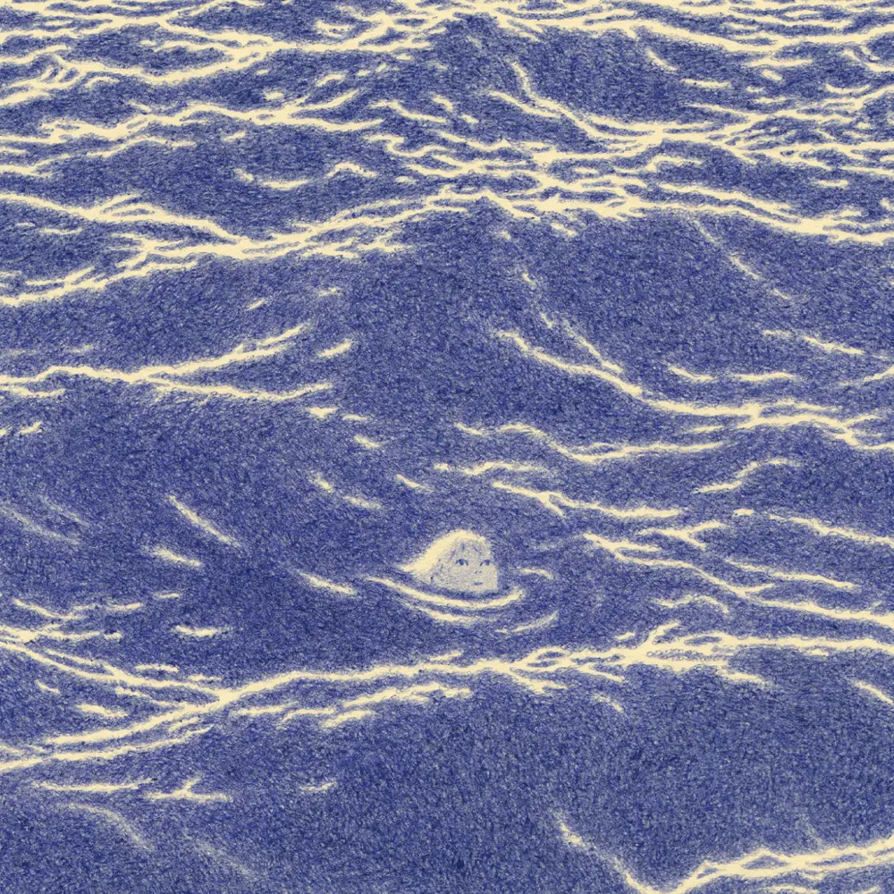
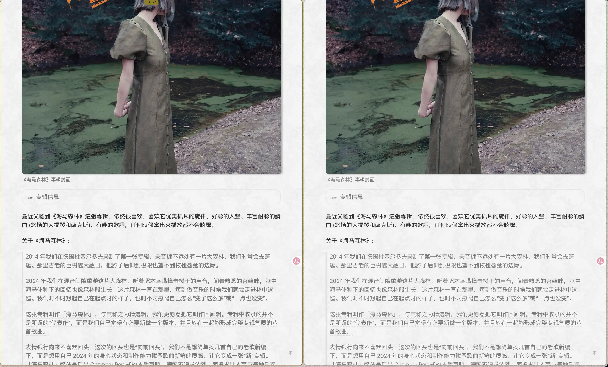

Zine#49
🎶 嘿！岛 (Black Island) - 表情银行 MimikBanka
{kind=link}

启明星
一定很孤独吧
孤独中
搁浅的你我啊
黑暗里
望眼欲穿向白昼
漫漫长夜
教我如何不泪流
浑浊的
黑夜赐予我疼痛
这疼痛
像雪一样正消融
睡魔啊
他唱着遗忘的歌谣
破晓时
就带走我的噩梦
哎呀呀
漫漫长夜
教我如何不泪流
闪电划破阴天
晨光驱散黑夜
在这世界的普通角落
我满不在乎地活下去
和你一起
和你一起
浑浊渐渐沉淀
一切清晰可见
在超越绝望的远方
比希望更远的地方
我等着你
拥抱你
等着你
拥抱你
⸺ 启明星 (Phospherus)
News | Article
A Tale of Two Bridges by pieterh
故事很好的诠释了 Gall's law：
一个能正常运作的复杂系统，总是从一个能正常运作的简单系统演变而来。一个从零开始设计的复杂系统永远无法正常运作，也无法通过修补使其正常运作。你必须从一个能正常运作的简单系统重新开始。
A complex system that works is invariably found to have evolved from a simple system that worked. A complex system designed from scratch never works and cannot be patched up to make it work. You have to start over with a working simple system.
以及，要及早行動、发布、驗証。思慮太多，可能早就錯失時機了，遇事不决就先行動看看。
Against Interpretation by Susan Sontag
中文翻译： 苏珊·桑塔格︱《反对阐释》
作者认為艺术 (画、書、音樂、电影等) 本身是獨立的，不需要去闡釋，去感受它就好。艺术不是一定要回答出它在表达什么，不是非要有什么意义。去闡釋往往需要將艺术本身解构成一系列元素，实际是一種翻譯，而翻譯往往也无法完全傳達原文的意思，糟糕的翻譯甚至会歪曲原意，塞进很多譯者自身的想法。有的感受也是无法用言語描述的，它是純粹的，具有感官上的直接性，是无法被闡釋的。
我们的任务不是要在艺术作品中挖掘出最大量的内容，更不是要从作品中榨取比已有内容更多的东西。我们的任务是削减内容，以便我们能看清事物本身。
我大体上认同作者的观点。不過要区分闡釋和理解，像是閱讀，还是要去搞明白作者想表达的東西，不用去過度解讀，但应该要达到理解，能捕捉到作者想表达的東西。
摘录
事实是，西方所有关于艺术的意识和反思，都一直局限在希腊艺术理论所划定的范围内，即艺术是「模仿」或「再现」。正是通过这一理论，艺术本身 ⸺ 超越了具体的艺术作品 ⸺ 变得成了一个问题，需要为其辩护。也正是这种对艺术的辩护，催生了一种奇特的视角，使我们习惯称之为「形式」的东西从我们习惯称之为「内容」的东西中分离出来，并导致了那种将内容视为本质、将形式视为附属的所谓「良苦用心」。
即便在现代，当大多数艺术家和评论家已经抛弃了「艺术是外部现实的再现」这一理论，转而支持「艺术是主观表达」的理论时，模仿论的主要特征依然存在。无论我们将艺术作品构想为一幅画（艺术作为现实的图画），还是构想为一个陈述（艺术作为艺术家的陈述），内容依然排在首位。内容可能已经改变，可能不再那么具象，不再那么清晰地写实，但人们仍然假设艺术作品就是其内容。或者，正如今天通常的说法，艺术作品在定义上就是在「表达」什么。（「X所表达的是……」，「X试图表达的是……」，「X表达了……」等等。）
当然，我指的并不是广义上的阐释，即尼采（正确地）所说的「没有事实，只有阐释」的那种意义。我在这里所说的阐释，是指一种有意识的思维活动，它体现了某种特定的准则和某些阐释的「规则」。
针对艺术而言，阐释意味着从作品整体中剥离出一系列元素（如 X 、 Y 、 Z 等等）。阐释的任务实际上是一种翻译。阐释者会说：瞧，难道你没看出 X 其实是 ⸺ 或者说，其实意味着 ⸺ A 吗？ Y 其实是 B ？ Z 其实是 C ？
什么样的情境会促使这种改造文本的奇特计划产生？历史为我们提供了答案的素材。阐释最早出现在古典古代晚期的文化中，当时神话的力量和可信度已被科学启蒙所引入的「现实主义」世界观所打破。一旦困扰后神话意识的问题 ⸺ 即宗教符号的得体性问题 ⸺ 被提出，原始形式的古代文本便不再被接受。于是，阐释被召唤出来，以使古代文本符合「现代」需求。因此，斯多葛学派为了符合他们认为神灵必须具有道德的观点，将荷马史诗中宙斯及其喧闹家族的粗鲁特征寓言化了。他们解释说，荷马通过宙斯与勒托的通奸真正指代的是权力与智慧的结合。同样，亚历山大的菲洛将希伯来圣经的字面历史叙事阐释为精神范式。菲洛说，出埃及、在沙漠中流浪四十年以及进入应许之地的故事，实际上是个人灵魂的解放、磨难和最终救赎的寓言。因此，阐释以文本的明确含义与（后来的）读者的需求之间的差异为前提。它寻求解决这种差异。情况是，由于某种原因，一个文本变得不可接受；但它又不能被丢弃。阐释是一种激进的策略，通过翻新来保存一个被认为过于珍贵而不能抛弃的旧文本。阐释者在没有实际擦除或重写文本的情况下，正在改变它。但他不能承认自己在这样做。他声称只是通过揭示其真实含义来使其变得易于理解。无论阐释者如何改变文本（另一个臭名昭著的例子是拉比和基督教对明显带有色情色彩的《雅歌》进行的「精神」阐释），他们都必须声称自己是在读出一种已经存在于那里的意义。
然而，在我们这个时代，阐释变得更加复杂。当代对阐释工程的热衷，往往并非出于对棘手文本的虔诚（这种虔诚可能掩盖了某种侵略性），而是源于一种公开的侵略性，一种对表象的公然蔑视。旧式的阐释虽然执着，但仍保持尊重；它在字面意思之上建立起另一层含义。而现代风格的阐释则是挖掘，且在挖掘的同时进行破坏；它挖掘文本「背后」，以寻找那个真实的潜文本。现代最著名且最具影响力的学说，即马克思和弗洛伊德的学说，实际上等同于复杂的诠释学体系，是侵略性且不虔诚的阐释理论。用弗洛伊德的话说，所有可观察到的现象都被归为显性内容。必须对这些显性内容进行探究和排挤，以寻找其下的真实含义 ⸺ 隐性内容。对于马克思来说，像革命和战争这样的社会事件；对于弗洛伊德来说，个人生活中的事件（如神经官能症症状和口误）以及文本（如梦境或艺术作品） ⸺ 都被视为阐释的契机。根据马克思和弗洛伊德的观点，这些事件只是看起来可以理解。实际上，如果没有阐释，它们就毫无意义。理解即阐释。而阐释就是重新表述现象，实际上是为其寻找一个等价物。
在大多数现代案例中，阐释等同于平庸之辈拒绝让艺术作品保持独立。真正的艺术有能力让我们感到不安。通过将艺术作品还原为其内容，然后对其进行阐释，人们驯服了艺术作品。阐释使艺术变得易于管理、顺从。
这种阐释的平庸主义在文学中比在任何其他艺术中都更为盛行。几十年来，文学评论家一直认为他们的任务是将诗歌、戏剧、小说或故事的元素转化为其他东西。有时，作家在面对其艺术赤裸裸的力量时会感到如此不安，以至于他会在作品本身中安装 ⸺ 尽管带着一点羞涩，一点讽刺的品味 ⸺ 对其清晰而明确的阐释。托马斯·曼就是这样一位过度合作的作者。对于那些更固执的作者，评论家则非常乐意代劳。
例如，卡夫卡的作品遭到了不少于三支阐释大军的大规模蹂躏。那些将卡夫卡读作社会寓言的人，看到了现代官僚机构的挫败感和疯狂，以及其最终在极权国家中的体现。那些将卡夫卡读作心理分析寓言的人，看到了卡夫卡对他父亲的恐惧、他的阉割焦虑、他的无能感、他对梦境的束缚的绝望揭示。那些将卡夫卡读作宗教寓言的人解释说，《城堡》中的 K. 正试图进入天堂，《审判》中的约瑟夫· K. 正受到上帝无情而神秘的正义审判…… […]
普鲁斯特、乔伊斯、福克纳、里尔克、劳伦斯、纪德……我们可以不断列举下去；那些被厚重的阐释层层包裹的作家名单是无穷无尽的。但值得注意的是，阐释并不仅仅是平庸对天才的恭维。事实上，它是现代人理解事物的方式，被应用于各种水准的作品。
艺术家是否打算让他们的作品被阐释并不重要。也许田纳西·威廉斯认为《街车》的主题正如卡赞所想的那样。也许考克多在《诗人之血》和《奥菲斯》中确实想要那些基于弗洛伊德象征主义和社会评论的详尽解读。但这些作品的价值肯定不在于它们的「意义」。 […]
从访谈来看，雷乃和罗伯-格里耶在创作《去年在马里昂巴德》时，显然是有意设计成可以容纳多种同样合理的阐释。但我们应该抵制阐释《马里昂巴德》的诱惑。在《马里昂巴德》中，真正重要的是其某些影像所具有的纯粹、不可翻译、感官上的直接性，以及它对某些电影形式问题所给出的严谨（尽管狭窄）的解决方案。
再说一次，英格玛·伯格曼在《沉默》中让坦克在深夜空旷的街道上轰鸣而过，或许是想将其作为阳具的象征。但如果他真是这么想的，那便是一个愚蠢的想法。（「永远不要相信叙述者，要相信故事，」劳伦斯如是说。）如果将坦克视为一个粗粝的客体，视为旅馆内发生的神秘、突发、全副武装的事件在感官上的直接对应，那么坦克出现的那个片段便是影片中最震撼人心的时刻。那些试图对坦克进行弗洛伊德式解读的人，只不过是在表达他们对银幕上真实呈现的内容缺乏感应。
此类阐释往往表明了对作品的不满（无论是有意识还是无意识的），以及一种想要用别的东西取而代之的愿望。
阐释基于一种极其可疑的理论，即认为艺术作品是由若干内容要素构成的，这种做法亵渎了艺术。它将艺术变成了一种消耗品，一种可以被随意归入某种心理范畴体系的物件。
阐释将艺术作品的感官体验视为理所当然，并以此为起点。但在今天，这已不能被视为理所当然。想想我们每个人都能接触到的艺术作品是何等繁多，再加上城市环境中各种冲突的味觉、嗅觉和视觉对我们感官的轰炸。我们的文化建立在过剩和生产过剩之上；其结果是我们的感官体验在持续丧失敏锐度。现代生活的所有条件 ⸺ 物质的充盈、极度的拥挤 ⸺ 共同钝化了我们的感官能力。正是要根据我们的感官状态和能力（而非另一个时代的），来评估评论家的任务。
现在重要的是恢复我们的感官。我们必须学会去观察更多，去聆听更多，去感受更多。
我们的任务不是要在艺术作品中挖掘出最大量的内容，更不是要从作品中榨取比已有内容更多的东西。我们的任务是削减内容，以便我们能看清事物本身。
我们需要的是艺术的色情学，而非阐释学。
另見：直接感受 by CC
摘录
[…] 什么叫“直接感受”？
我当时只能仓促地解释：它有点像你看到一幅画，它的色彩落在你的视网膜上时形成的第一波冲击；是某个对象抵达你时，在你脑中留下的第一个印象和感受。它看起来像是“未被加工”的，但其实并不空白。恰恰相反，这种感觉的产生统合了你此前全部的审美、经验、思考和知识库，只是在那一瞬间，它还没有被进一步拆解、命名、分析。而你一旦开始思考、开始解构、甚至只是开始注意到，那种东西就未必还留得住了。
我对“直接感受”的理解，和这种“直击”很像。
某个东西以完整的、未被分流的、未经转述的、未被解释的信息量，直接轰到你的脑中。
天然，原初，纯粹，原始，不丢失信息量，光流，轰击。
——是的，我只能依靠不断叠加词语，用很多个并不完全重合的形容去逼近它。
也就是说，恰恰是这种最“直接”的东西，常常最难直接传达。我反而必须长篇大论，才能让它尽可能接近我心里那个样子，或者至少接近到“表达”本身让我自己满意的程度。
Going back to the morning newspaper model by Chandru
陆上的人喜欢寻根问底，虚度了大好光阴。冬天忧虑夏天的姗姗来迟，夏天则担心冬天的将至。所以他们不停四处游走，追求一个遥不可及、四季如夏的地方，我并不羡慕。
所有那些城市，你就是无法看见尽头。尽头？拜托！拜托你给我看它的尽头在哪？当时，站在舷梯向外看还好。我那时穿着大衣，感觉也很棒，觉得自己前途无量，然后我就要下船去。放心！完全没问题！可是，阻止了我的脚步的，并不是我所看见的东西，而是我所无法看见的那些东西。你明白么？我看不见的那些。在那个无限蔓延的城市里，什么东西都有，可惟独没有尽头。根本就没有尽头。我看不见的是这一切的尽头，世界的尽头。
⸺ 《海上钢琴师》 台词
訂閱流給人的感覚也是无尽的，每天都有大量新增的信息，看完了目前的信息，一刷新又多了一堆未讀的，像是一个永遠无法標記為完成的待辦項，這種没有盡頭的感覚无形中給人帯來了焦慮感。
Current RSS Reader 的解法是將計数去掉了，讓你忽略数量，這樣你就不会总是想着將未讀記数清空，从而更専注在閱讀上，弱化了清空未讀的 幻影义务。 Current 將訂閱流設計成一条流動的河，內容會基于类型有不同的流速，流走了就消失了。很像這段話描述的狀態：
说到这个，本周早些时候我偶然读到 Oliver Burkeman 在 Meditations for Mortals 中关于积压书单的绝妙建议。
[…]把你的待读书单视作一条河流，而非一个水桶。换言之：不要将积压的书单看作一个会逐渐填满 [甚至溢出] 的容器，认为清空它是你的责任；而应视其为从你身边流过的溪流，你只需从中偶尔撷取几本心仪之作，任其余书籍随波而去而不必心怀愧疚。
Tracking my reading and books on tap by John Rakestraw
Current 或許能免除了清空未讀条目的「义务」，但我会担心錯過了一些我可能感兴趣的信息。
而 Chandru 的解法則是每天生成一份日报，包含當天所有的更新內容，像是一份报紙，限定了一天的閱讀量，只需要看完這份「报紙」就够了，把无尽变成了一天份量的有限。就像看报紙一樣，看完那些感兴趣的，报紙就可以扔一邊了。
我更傾向 Chandru 的解法，既不怕錯過，也能切断訂閱流，讓其在一天中变得有限，减少了清空未讀的焦慮感。
另外也推薦看看 日常#6::订阅流整理。
摘录
在正在编写的指南/手册「逃离算法囚笼」中，我谈到了社交媒体「信息流」的这一根本性问题。它们是无限流。永无止境。你滚动得越多，它就越往下延伸。
这是我们炮制出的最黑暗的设计模式之一。如果你是在早期的互联网环境下长大的，你会记得翻到分页列表末尾的情景。过去事物是有终点的。现在没有了，终点不再是必然。
尽管有无限的内容可供消费，应用其实可以决定为你「结束」列表。它们可以选择说：「哦，目前就这些了，几小时后再来看看吧，我们会给你展示新内容。」但它们不会这么做。
RSS 订阅源受限于你订阅的数量，但它们仍然设法向你推送看似无穷无尽的流。再加上未读计数，你又回到了数字内容消费无法管理的焦虑之城。
[…]
我们不需要「流」。我们的大脑并非为了处理「流」而进化的。大脑需要休息，如果设计师和开发者关心这一点，应用完全可以设计成另一种方式。
你是否曾对自己说过，要在周末补完所有未读内容？或者打算在周末处理完所有的家务（打扫、洗衣服、准备餐食）？
我们本质上是在进行「批处理」。事实证明，批处理是应对「信息流」的一剂良药。
这里还有一个类比，对那些伴随着纸质报纸长大的人来说很受用。你还记得拿到晨报，浏览标题并详细阅读其中几条新闻的情景吗？那之后呢？读完就结束了。就是这样。即使你回头再读一点，也会有一种明显的「完成了」的感觉。一种终结感。任务 = 已完成。
The Mystery in the Medicine Cabinet Dynomight by Asterisk
在选择退烧止痛藥時，我往往傾向于布洛芬而非对乙酰氨基酚，主要是布洛芬聴得更多，名字簡单更容易記住。
而作者傾向于布洛芬，是因為对乙酰氨基酚服用多了会对肝脏造成很大负担，一般一天最多可以服用 4 克，如果不小心過量了 (例如 8 克)，肝脏可能衰竭，甚至死亡。作者覚得如果 8 克对乙酰氨基酚会毁掉他的肝脏，那么 1 克可能也会对它有很大伤害，而布洛芬過量似乎没有乙酰氨基酚危害大。但作者了解后发現他是錯的，对大多数人在大多数情况下，只要按说明使用，对乙酰氨基酚比布洛芬更安全。
以下部分是我查閱後的一些個人理解，未必都正確，如果你需要選擇藥物，請去諮詢醫生。
布洛芬 的止痛核心在於 外周組織 。當身體受傷或發炎時，受損細胞釋放前列腺素等物質，直接刺激痛覺神經末梢。布洛芬在外周強力抑制環氧化酶 (COX)，阻斷前列腺素生成，從源頭減少痛覺訊號的產生。
对乙酰氨基酚 則是在 中樞神經 層面 提升疼痛閾值 。它減少大腦和脊髓中的前列腺素，讓大腦對傳來的痛覺訊號「比較不敏感」，但不會阻止外周組織繼續發炎或產生痛覺因子。
布洛芬在 任何環境 下都能穩定結合 COX 酵素活性位點，無論是在血液、發炎組織或腦部。而对乙酰氨基酚對 COX 的抑制作用會被高濃度過氧化物（如發炎部位）阻斷，因此它在「乾淨」的 中樞神經環境 中才能有效抑制 COX，在外周發炎部位則失去活性。
布洛芬不僅可以止痛，還可以消炎，但是它作用範圍太廣了，除了對發炎位置起作用，它還會給胃部 (减少胃部黏液)、心臟 (导致更多凝血)、腎臟 (抑制血管擴展的信號) 帶來負擔，如果本身這些位置有問題的話，布洛芬可能會造成進一步的惡化。
而对乙酰氨基酚主要作用於神經，提高了疼痛閾值，可以止痛，但對消炎用處不大，但也因此它對身體其他部位的影響更小。但過量的对乙酰氨基酚肝臟會無法代謝，造成肝臟衰竭。
比較反常識的是，既然对乙酰氨基酚會造成肝臟負擔，如果肝臟有問題，那用布洛芬是不是更安全？答案是否定的，有肝病時，血液難以流入肝臟，就會造成血液瘀積，身體為了調節，會讓血管收縮，包括腎臟，而此時腎臟會釋放信號因子去擴大血管，但是布洛芬也會抑制信號因子，導致腎臟缺血，而乙酰氨基酚因為只作用於神經，不作用於全身的抑制，反而更安全。
所以，對於止痛，如果是神經類的，例如頭痛、牙痛、發燒，安全劑量下 的对乙酰氨基酚會更安全，對身體影響更小；對於非神經類的、涉及到發炎、紅腫的，例如肌肉拉傷、關節炎、痛經、牙齦腫痛等，布洛芬會更有效，但如果本身腸胃有問題的話，布洛芬可能會對腸胃造成更大負擔。
On Taste by Matthias Endler
在任何事情上投入足够的时间，你都会对其产生强烈的见解。你会痴迷于细节。而世间万物皆是某些人的痴迷所在。
运动鞋。机械键盘。咖啡。
這里的投入是要主動投入，穿衣是每天都做的事，但也不是每个人都能把衣服穿出「品味」。主動投入，往往也來自于喜愛，因为喜欢，所以愿意花大量時間去了解，从而产生自己的见解，自己的偏好。
一旦你开始察觉到这些细微差别，就再也无法视而不见了。你已经形成了强烈的个人偏好。
但在这个阶段，你只是个有自己看法的人。
有偏好并不等于有品味。
要培养良好的品味，你必须能够欣赏自己偏好之外的品质。这需要你看出某件事物是如何通过刻意的选择来表达理念的，并能分辨出这些选择是否真诚。
每个人都有自己的偏好，我偏好穿宽松的衣服，例如 T恤，但我的穿衣說不上有品味，有品味的穿衣需要关注衣服的材质，搭配等，而我对此关心得不多。品味需要知其然，且知其所以然，喜欢还不够，要知道是什么让自己喜欢，什么樣的让自己讨厌。
在每一个文化领域，我们最初的品味都处于相对基础的层面，即社会的集体基准 ⸺ 而要将个人品味提升到精妙的境界，需要付出努力。
品味是有及格线的，有的品味在大多数人看來都很糟。而在及格线上，只是存在差异，不存在优劣，我更偏好爵士樂，你更偏好搖滾，都好，而有的粗制滥造的音樂是谈不上什么品味的。
在今天，培养独特的品味变得更加困难。我们被信息流和算法包围，它们只向我们展示我们已经喜欢的东西。如果不接触那些我们不喜欢的东西，我们就无法发现那些我们真正热爱的东西。
如果我们变得过于安逸，就会完全停止培养品味。我们的偏好会变得狭隘而浅薄。我们只是喜欢大家都在喜欢的东西，却说不出理由。
出路在于去在意某些东西。任何东西都可以！在意到让它成为你自我的一部分。
形成品味需要大量的接触相关領域，既接触好的，也接触差的；形成品味需要去在意、去痴迷、去热愛。
摘录
在任何事物上投入足够的时间，你就会对它产生强烈的见解。你会对细节变得痴迷。而任何事物都是某人的心头好。
运动鞋。机械键盘。咖啡。
[…]
一旦你开始察觉到这些细微差别，就再也无法视而不见了。你已经形成了强烈的个人偏好。
但在这个阶段，你只是个有自己看法的人。
有偏好并不等于有品味。
要培养良好的品味，你必须能够欣赏自己偏好之外的品质。这需要你看出某件事物是如何通过刻意的选择来表达理念的，并能分辨出这些选择是否真诚。
良好的品味植根于背景之中。它需要你了解事物背后的历史和工艺。否则，你就会与品质擦肩而过。
良好的品味和专业知识就像是兄弟姐妹。两者都源于深切的关注。两者都需要知道事物为什么起作用。两者都要求意识到每一个决定所带来的影响。
但它们并不相同。品味是一种鉴赏力。你可能对某样东西很有品味，但自己却做不出来。专业知识则关乎创造。无论你有没有品味，你都可以成为某个领域的专家。
有趣的是，这两者往往相辅相成。有品味的人非常在意细节，以至于他们最终会开始自己动手制作。而关心自己手艺的专家，往往也会在不知不觉中培养出品味。
买苹果设备并不意味着你品味好。数以百万计的人都拥有它们。对许多人来说，它只是一个身份象征。
[…]
事实上，有品味的人通常会避开品牌。品牌正是扼杀伟大产品的元凶。
[…]
大多数产品都是为普通消费者打造的，所以大多数产品都满足于平庸的质量。
[…]
品牌不在乎质量或诚实。它们只在乎钱。
出路在于去在乎某些事物。任何事物都可以！在乎到它成为你自身的一部分。
每个人都应该至少有一件自己非理性痴迷的事情。一件他们了如指掌的事情。这会造就更有趣的个性。更丰富的人生。
人类通过共同的痴迷来社交。我们因为意式浓缩咖啡研磨机和摩托车而建立联系。突然之间，你就能和一个陌生人产生共鸣。
当你为他人创作时，你的品味就会显现出来。它展示了你是谁以及你在乎什么。这很可怕。但这正是你找到同类的方式。
另見：The stages of taste by Tracy Durnell
Others
- What makes a good blog good? by The Art Of Not Asking Why
- Why I Blog by Danny Guo
- Some thoughts on killing your blogroll by rscottjones
「诚实」的机器 by Eltrac
多點同情心。
- 关于 Stallman 报告 by Cytrogen
- Hello, Theseus by Chlorine
- BlogBlog 同樂會回顧：「生產力」的 102 種面向 by Wen
Writing a blog post without a screen by James
中文輸入法容易出現重碼，不用屏幕盲打估計不太行。
Hey you, start communicating! by David
Hey，給我寫邮件打个招呼吧。（有時我也不知道回些什麼，但也希望能有一些交流。）
Who knows that you blog? by David
你会告訴你身邊的人你的博客嗎？
既然博客是公開的，本身也没啥需要隱藏的，但我還是想盡可能匿名，這樣表達時頋慮更少，被熟悉的人看到博客會有點不好意思，或許是博客里有平時面對熟人不展露的一面。
创作、交易与精神独立 by Sol
對我來說博客很难做到只為自己而寫，或許只有日記能這樣。寫博客的時候多多少少都預設了讀者，多多少少也会受到一些影响，虽說没几个人看我也会繼續寫，但還是会在意有没有人看。目前寫博客覚得难，更多還是表達上有些卡頓，要多看多想多練。
另見：Zine#47::Re: how are you fearless and how do you deal with anxiety? by Protesilaos Stavrou
- 猫与乡野 by 响石潭
- A love letter to our library bus by Juha-Matti Santala
- 存檔點更新 by Parker Chang
A guide to home row mods by Precondition
使用 asdfghjkl 這一行替代 ctrl、alt、shift 等修飾鍵，如果用小拇指按 ctrl 太累了，不妨試試。
另見：
Talking to 35 Strangers at the Gym by Thienan Tran
处于尴尬的境地其实并没那么糟。那一刻确实很难受，但随后你只需花几分钟冷静下来，然后继续你的生活。你会没事的。
I Want to Live Like Costco People by Jordan Michelman
人生的每个阶段都可以在 Costco 采购。还有哪里能同时买到婚戒 、婴儿背带和棺材？它伴随你的人生轨迹 —— 在有房前后、在有孩子前后，人们对 Costco 的体验截然不同。
- 拍摄一次彗星 by 张可
- 有氧从放弃到入门 by 椒盐豆豉
Cool Bit
-
互联网已经变得臃肿不堪。庞大的 JavaScript 库、无数的客户端查询以及过度复杂的前端框架在如今已是家常便饭。
当像《纽约时报》这样受欢迎的网站大小达到数 MB（其中近 50% 是 JavaScript！）时，你就知道出问题了。为什么网站需要这么大？这简直不可理喻。
[…]
512KB 俱乐部是一个汇集了互联网上注重性能的网页集合。要符合加入资格，你的网站必须同时满足以下要求：
- 它必须是一个包含合理信息量的实际网站，而不仅仅是页面上的几个链接。
- 您的未压缩网络资源总量不得超过 512KB。
网站提供了兩个链接用于測試，可以基于測試結果去优化你的网站：
通過 DebugBear 的报告我也优化了一些首頁問題，加載应该会更快一些。
-
相同的 prompt，結果的差异不大，或許是 LLM 趋向給平均結果吧。
Prompt:
ChatGPT，你陪我段时间了，我想看看你的样子。请成一张类似你 iPhone 随拍的照：没有明确主题、没有刻意构图，只是很普通、甚至有点失败的快照。照略带运动模糊，光线不均、轻微曝光过度，角度尴尬，构图混乱，整体呈现出一种“过于真实的随手一拍感”，就像是从口袋里拿出手机不小心按到的自拍。
-
用 agent 驅動的坦克大战，使用 markdown 編寫战斗策略让 agent 执行。
-
A GPU-rendered terminal emulator with inline 3D graphics.
-
給图片添加抖動 (Dither)、像素化等效果，可惜不能用自己的图。类似的效果可以用 ImageMagick 或 sharp 實現，另見 how did I make the music page. 。
Tutorial | Resource
Details that make interfaces feel better by Jakub Krehel
- 當有內外 border radius 時，遵循
outer radius = inner radius + padding，看起來會更和協。 font-smooth CSS property 可以讓文字更平滑，使文字看起來更細，从而和粗體對比更明显。

图1 右側是設置了 font-smooth: antialiased; 的效果。 这也有弊端，在某些字體下会显得太細，看着轻飄飄的。
{kind=link}
還有一些関於動画、視覚對齐、边框的建議。
Others
-
使用 git 和 email 发送 patch。
-
一套用于頁面设计的 icon，包括对齐、字号、边距等相关的 icon。
-
Master the Node.Js Internals.
Code Related
Browsers Should Have a Native Control for Per-Site Color Scheme by Tyler Gaw
有的网站支持 light / dark mode，有的是基于系统自動切換，有的提供切換入口让用户自己决定。但入口的实現往往有很多不同，有的用下拉框，有的是单个按纽，有的是文字，有的是图标…每个网站的实現不同，用户可能每次都要找找才能完成設置。這个功能基本所有网站都用到，似乎由統一做会更好，使得交互統一，形成規范。
作者的文字还挺幽默的，让我不禁一笑：
拥有多种主题（至少是亮色和暗色）的网站已经非常普及，感觉已成为标准。但作为用户，必须在每个网站上寻找自定义配色方案控件是一件很痛苦的事情。有时它在页眉，有时在侧边栏，有时隐藏在设置菜单或页面中。你们中有些「疯子」甚至把它放在极长页面的最底部，我觉得你们就是针对我。
[…]
顺便提一下：你的暗色方案背景太暗了，而前景又太亮。我的视网膜都要烧着了。
如果你的网站实現了主題切換 (light/dark)，请提供一个选項让用户可以切換，并不是每个人都愛用 dark mode。用户不想用 dark mode，有三个选择：
- 使用浏览器的閱读模式，但這会丟弃博客樣式。你精心设计的樣式读者懶得看，因为你强迫他只能用 dark mode，而且你的 dark mode 可能还很刺眼，读者的视网膜都要烧着了。
- 用户修改系统的 light/dark mode 配置，让浏览器跟随系统切换，从而将网页恢复成 light mode。但这么操作也挺麻烦的，大部分读者不会去为了一个网页做这么多操作。
- 关闭网站，不看了。
另外如果你提供了主题的切换按钮，请放在一个明显的地方，不要让用户找半天。
除了主题切换按钮，我还发现有的网站会把滚动条设置的很不明显。滚动条本身可以提示读者当前的位置、閱讀的进度，也方便读者快速拖动滚动条去到页面其他位置。请不要隐藏滚动条，為了那么点好看不值得。
Better Browser Caching with No-Vary-Search by Harry Roberts
URL 参数不同不会触发頁面的緩存，例如:
?colour=red?colour=blue
這会返回不同的頁面。但有的参数是和返回內容无关的，例如：
?utm_source=google?utm_source=chatgpt
它們返回的頁面是一樣的，本來应该可以复用缓存，但因为参数不同而无法复用。新提出的 No-Vary-Search header 可以解决这个問題。对于上面的 utm_source ，设置 No-Vary-Search: params=("utm_source") 的 HTTP Response Header，就可以让浏览器忽略 utm_source 的参数差异，复用缓存。
Others
Scroll-Driven Animations by Josh W. Comeau
主要是関于
animation-timeline: view()的使用，很不錯的文章。我在 Album Wall 頁面应用了這个特性，在手機上可以看到效果 (Firefox 還不支持)，滾動頁面時可以留意一下。相関代碼見 博客样式设计::animation。
Control the Speed of Infinite Animations by Temani Afif
animation-composition 指定了当多个动画同时影响同一个属性时使用的复合操作，可以实現有趣的效果，例如在鼠标悬浮時加速動画 (在悬浮时，覆盖
animation的值也能做到同样的事情)。Compositing & Blending by Niklas
很不错的文章，解释了颜色混合的原理，对理解 mix-blend-mode 和 background-blend-mode 的使用会有帮助。最后通过混合让边框「消失」的例子看起来很有用。
The O(n^2) Bug That Looked Like Clean Code by Aral Roca
使用
.map、.filter、.includes時小心因為嵌套造成O(n^2)的時間复杂度。- 9 Times the Web Platform Was Influenced by Libraries by Jad Joubran
AI is Breaking Two Vulnerability Cultures by Jeff Kaufman
AI 加速了漏洞的发現和修复，可能会改变當前的「漏洞文化」。
Pre-emptive Commit Messages by Arialdo Martini
Git 一般是先改動再提交，試試反過來，先提交，再改動。
The Emacsification of Software by Thomas and Erin
AI 让人可以像定制 Emacs 一樣定制那些滿足自己具體需求的软件。
- Testing Vue components in the browser by Julia Evans
- Moving away from Tailwind, and learning to structure my CSS by Julia Evans
- I Left Port 22 Open on the Internet for 54 Days. Here's Who Showed Up. by Arman Hossain
My Thoughts on Bun's Rust Rewrite by Jiacai Liu
软件工程中有一条基本原则： 你不理解的代码不应在生产环境中运行。这并非因为它一定存在 bug，而是因为一旦出现故障，你将无从下手排查。这条原则并非保守主义 ⸺ 而是可维护性的基准。
一个没人能搞懂的系统，并不意味着它没有漏洞⸺ 这意味着当漏洞出现时，没人知道原因。凌晨 3 点发生生产环境故障时，这两者之间的区别就变得再清楚不过了。
这才是此次重写背后真正的技术赌注 ⸺ 不是 Zig 与 Rust 之争，而是由 AI 生成的、未经审核的代码能否在生产环境中长期维护。
Projecting React by Tanner Linsley
TanStack Start 的作者嫌 React 太臃肿了，花一天時間用 LLM 做了 TanStack/redact ⸺ React 的另一种逻辑方案，具有 100% 的 API 兼容性，但实现更简单，从而带来更小的包体积和更好的性能。
我反复想到的一个比喻是 Linux 发行版。
当人们使用「分叉（fork）」这个词时，有时会暗示存在一个「真正的」Linux，但实际上并没有。只有一个内核， 然后有数百个发行版将该内核投影成其用户想要的任何形态 ⸺ Debian、Arch、Alpine、NixOS，或者运行在你路由器上的任何系统。没有人认为 Arch 的存在会伤害 Linux，这才是关键所在。
歌曲的混音版也是同样的道理。有一首原曲，然后有衍生编曲，有时人们反而更喜欢衍生版本。这并没有剥夺原曲的任何东西，只是增加了原曲的可能性。
我认为未来几年的 Web 开发会比任何人预期的更像发行版和混音版。人们将围绕他们实际使用的功能，构建他们所依赖的库的专属投影，其中少数会像 vinext 那样作为公共产品发布。大多数则不会，这也没关系，因为当重新生成代码的成本很低时，底层的思想才是最重要的，而它们的任何一种表达形式都只是众多选项之一。
这个观点和 The Emacsification of Software 相近。
- What's actually new in JavaScript (and what's coming next) by Neciu Dan
-
虛拟滾動的可視化，很直观。
Media Queries Range Syntax by Ahmad Shadeed
当需要在小于
300px的寬度设置一个媒体查询断点，你会不会想一阵才知道应该用min-width还是max-width？是max-width: 300px还是max-width: 299px？用 Range Syntax 就不用想那么多，
width < 300px就好了，清晰易懂。CSS `n of` Selectors for Conditional Validation by Preethi Sam
:nth-child() 的
of <selector>語法在表单校驗场景的示例。
AI Related
Article
Google’s Prompt API by Mat Marquis
一旦设备上安装了模型，根据规范，您访问的任何网站都无需请求权限即可向该模型发送提示，并可随心所欲地处理响应结果。再强调一次，如果您使用的是 Chrome 浏览器，Gemini Nano 就会 驻留 在您的设备上；即使您将其卸载，它也会再次出现，除非您开始以普通网络用户无法做到的方式拔掉线缆。简而言之：您的设备上现在运行着一个大型语言模型（LLM），您访问的任何网站都能利用它，并调用其所需的任何处理资源。谷歌 ⸺ 这家因涉及侵犯隐私和数据收集中的欺骗行为的诉讼已支付数十亿美元和解金的公司 ⸺ 却表示大家无需担心。
The Zig project's rationale for their firm anti-AI contribution policy by by Simon Willison
Zig 强烈抵制在代碼贡献中使用 AI，哪怕是用 AI 进行母語翻译。
Coarse is Better by Fernando
旧模型之所以美丽且引人入胜，是因为那些不完美、模糊、错误和矛盾创造了小小的缝隙，让你的想象力可以为艺术注入生命。这些图像不是固定、静态的东西：它们可以演变成无限可能。
至于新模型 ⸺ 我还需要说完这句话吗？它们太精确、分辨率太高，以至于无法创造抽象、多面的事物，只能制造具体、死板的东西。
Vibe coding and agentic engineering are getting closer than I’d like by Simon Willison
所以我意识到，比起测试和文档的质量，我更重视的是有人真正使用过这个东西。如果你有一个「vibe coded」的东西，并且你在过去两周每天都在使用它，那对我来说比你刚刚吐出来、几乎没有被使用过的东西更有价值。
如果你每天能从写 200 行代码提升到写 2000 行代码，会有什么别的东西崩溃？事实证明，整个软件开发生命周期都是围绕着「写几百行代码需要一天」这种观念设计的。而现在不再是这样了。
Expansion artifacts by Matt Ström-Awn
压缩总会永久改变数据。常见格式（JPG、MP3、MP4）会缓慢且温和地改变内容：通常需要经过数百次的保存、分享和重新上传，工具产生的痕迹，即所谓的压缩伪影 ，才会变得明显。多次重新保存 JPG 它会变得方块化和褪色；反复迭代 MP3 音乐中会渗出金属感；将 YouTube 视频重新上传一千次 最后你会得到一个画面糊状、音频难以辨识的混乱产物。
LLM 是对其训练数据的有损压缩，而训练数据本身又是对可用数据的有损抽样。
而人和 LLM 又基於壓縮後的數據進行擴展，這些擴展的數據，可能又被用做訓練，反覆的經歷壓縮擴展，最後一切都失真了。
Appearing Productive in The Workplace by No One's Happy
只有当你能确切验证结果时，才去使用这个工具。永远不要向模型寻求确认；这个工具会附和所有人，而毫无代价的赞同，是一文不值的。
你不知道的 GEO：AI 可见性的原理、实践与取舍 by Tw93
GEO 是 Generative engine optimization，即生成式引擎优化，让 LLM 在搜信息時更容易檢索到你的內容。文章分享了一些相関經驗。
Software is becoming marketing by Tereza Tizkova
如果你是一名软件工程师：欢迎来到非技术人员多年来一直在经历的世界。准备好迎接那些经验不如你的人对你指手画脚、评估你的工作并质疑你的决定吧。你的选择是：要么成为绝对的最强者，要么将过硬的技术能力与其他能力结合起来……比如设计、分发、品牌或行业专业知识。最糟糕的处境是仅仅精通软件开发而别无长处。
如果你不是软件工程师：你现在也可以构建产品了。但编写代码从来都不是最难的部分，最难的是品味、分发渠道以及创造出人们真正想要的东西。这一点从未改变。
The Anatomy of an Agent Harness
Agent = Model + Harness (智能體 = 大模型 + 框架)
Harness 負責补充 Model 缺失的能力。If you're not the model, you're the harness.
文章总結了 Harness 主要做的事。
Agentic Coding is a Trap by Lars Faye
您所表达的往往并非您真正想表达的意思 ，而大语言模型会用假设（或幻觉）来填补歧义，这导致了：更多的审查、更多的代理修订、消耗更多的 Token，以及与创作内容之间更多的脱节。反之，即便您写出了有史以来最漂亮、无歧义且结构完美的提示词，LLM 仍可能输出一个凭空捏造的方法，因为它本质上是一个「预测下一个 Token」的引擎，而不是编译器。您不能指望用概率系统取代确定性系统后还能实现零歧义。
- 我从不生成超过我单次能审阅的代码量。如果内容过多无法审阅，我会放慢速度并拆分任务，在必要时手动重构，以确保对最终结果有全面的理解。
- 我从不要求大语言模型或智能体去实现我从未做过或无法独立完成的事情，除非纯粹是为了学习或教程目的（且通常在完成后会将其丢弃）。
Project Think：在 Cloudflare 上构建下一代 AI 智能体
我们见证了 AI 智能体发展的三个时期：
第一个时期主要是聊天机器人。它们无状态、被动响应且比较脆弱。每次对话都是从头开始，没有记忆、没有工具，也无法执行任何操作。这让它们能够回答问题，但也将它们的功能限制在只能回答问题。
第二个时期是编码智能体。它们有状态、会使用工具，且功能远比聊天机器人更强大，例如 Pi、Claude Code、OpenClaw 和 Codex。这些智能体可以读取代码库、编写代码、执行代码并进行迭代。这证明，配备适当工具的 LLM 可以成为一台通用计算机，但它们只能在笔记本电脑上运行，供单个用户使用，且无法保证持久性。
如今，我们进入到第三个时期：智能体作为基础设施。它们具备持久化、分布式、结构安全、无服务器的特点。这些智能体运行在互联网上，经历故障后仍可运行，闲置时不产生任何成本，并通过架构而非行为来确保安全性。任何开发人员均可构建并部署智能体，服务于任意数量的用户。
The Last Software Engineer by Kent C. Dodds
所以，让我们把时间快进一点。让我们一直走到 AI 接管了我们目前作为软件开发者所创造的所有价值的那一刻，然后往回退一步。
「最后的软件工程师」能提供的最后一项有价值的东西是什么？
不是敲代码。
不是选择库。
甚至不是设计实现方案。
最后一项有价值的东西是 判断力 ⸺ 决定什么值得被实现，哪些约束绝不能被违反，哪些权衡是可以接受的，以及什么样的损害会让成功变得毫无意义。
换句话说，最后的软件工程师不仅仅知道要构建什么。
最后的软件工程师知道 应该 构建什么。
Skills
forrestchang/andrej-karpathy-skills
A single CLAUDE.md file to improve Claude Code behavior, derived from Andrej Karpathy's observations on LLM coding pitfalls.
-
一个将复杂的终端输出转换为格式化好的 HTML 页面的 Skill。
-
Skills For Real Engineers.
Tools
-
The open-source managed agents platform. Turn coding agents into real teammates — assign tasks, track progress, compound skills.
-
Local-first, open-source alternative to Anthropic's Claude Design.
-
Browser automation CLI for AI agents
-
The most powerful and modular diffusion model GUI, api and backend with a graph/nodes interface.
Tool | Library
-
A best-practices CSS foundation.
-
JavaScript 動画引擎，首頁動画挺酷的。
-
一款用于查找 Web 平台特性的命令行工具。可以直接在终端中按关键词搜索、检查 Baseline 状态、查找 MDN 文档、规范、浏览器漏洞、调查结果等。
-
可以渲染图表的字體。
html-to-text/node-html-to-text
HTML to text converter.
-
pnpm 发布 11.0 了，默认设置 minimumReleaseAge 为 1 天 (另见：Zine#48::We should all be using dependency cooldowns by William Woodruff)；新增了原生的发布流 (
pnpm publish,login…)。 -
portless 可以让
localhost:3000变成myapp.localhost(或其他名字)。Why? -
一些封裝了動画的 React 組件，是一个动画和效果的集合，可以借鉴实現。
-
Read and write OpenType fonts using JavaScript.
-
An open source file tree rendering library. 文件树渲染库，功能丰富。
-
A visual CSS editor for Mac. Browse your stylesheets as node diagrams, edit variables, and write code — all in one place.
Emacs
I have officially retired from Emacs by Chris Wellons
Chirs Wellons 的 Elfeed 一直在用，感謝他的付出，很遺憾他離开 Emacs 了，祝好。
Elfeed 現在是 minad 接手，最近更新很頻繁，更新的功能還不錯。
-
Browse GitHub repos without cloning
What's in the Emacs newcomers-presets theme? by Sacha Chua
截至 2026 年 2 月的 Emacs 开发版包含了一个
newcomers-presets主题，可以通过启动画面启用，或使用M-x load-theme RET newcomers-presets RET启用。文章介紹了newcomers-presets都預設了什么。see also:
- Working on the Emacs newbie experience by Sacha Chua
- Emacs: decent defaults I shared with Sacha Chua by Protesilaos
-
Flexoki Themes implemented on top of Modus Themes.
Must-have Emacs Packages for Efficient Software Development and Text Editing by James Cherti
James Cherti 分享了一些他覚得好用的 pacakge，涉及了很多方面。
The Emacs's Gamegrid library #1 by Vannilla
Emacs 中的
gamegrid.el可以制作貪吃蛇等游戏，但gamegrid.el文档较少，作者分享了一些他的經驗。- Emacs: writing a project.el backend by Vannilla
-
Really Actually Make Backups。每当你保存指定的重要文件列表中的任何一个文件时，都创建一个备份文件。将这些极其谨慎、甚至有些过度的备份隐藏在你指定的目录中。
-
这期的主題是「May I recommend…」。
- Emacs: save any buffer as PDF (my new buffer-to-pdf package) by Protesilaos
-
可以在单独的缓冲区中显示可点击的 denote 关键词云及其出现频率。
I built an org-mode weekday repeater, .+wd
能让日期从周五跳到周一。
Implementing a minimal evergreen blog in HTML and Emacs Lisp by Martin
作者分享了他是如何用 Emacs 构建博客的。博客蛮簡洁的。
一些话 | 摘抄
Warren Buffett’s message to shareholders and partners: Follow the ‘Golden Rule’
给追随多年的股东留下了一条「黄金法则」：你希望别人怎样对待你，就怎样对待别人。无论是做父母、做老板还是做投资人，巴菲特说，他没见过一个真正这样做事的人，是不快乐的。
To my students by Brent A. Yorgey
我最初进入计算领域是因为思想的美感、创造的喜悦，以及构建工具来帮助人们并促进人际关系的可能性。我仍然相信这些东西，尽管似乎大多数行业并不相信。我写下这些是希望并深知你们也相信这些。有些话我想对你们说 ⸺ 这些话比我可能教给你们的任何内容都重要得多，但我总是不太确定在课堂上该如何或何时说。所以我决定在这里写下来。我希望你们能在这里发现一些有助于反思的东西，无论你们是即将步入社会还是继续学业。
- 不要相信那些关于技术是「不可避免的」或「将长期存在」的自私谎言。你没必要非得顺从主流叙事。你可以做出深思熟虑的选择，并帮助他人也这样做。
- 要用心预先决定你自己的道德和伦理底线。不要接受那种「暂且」牺牲原则直到找到更好的选择为止的谎言。
- 培养你深度思考的能力。无论付出什么代价，都要在空间和时间上为自己开辟出无干扰的泡沫。这可能意味着对那些别人说至关重要或不可避免的技术或工作模式说「不」。
- 深切关注你的手艺。重构代码直到它清晰且优雅。编写供他人阅读的优秀文档。要有放慢速度的勇气，尤其是当其他所有人都在告诉你需要快马加鞭并偷工减料时。
- 比起利润、代码或生产力，要更加关心人、关系和正义。
- 最重要的是，要受爱而非恐惧的驱动。
不说而说 by 和菜头
最后，分享一个我个人的心得：我看过大量国内外的音响测评视频，里面每一个博主都会把一件厂商刚刚送来的产品吹得天上有地下无。而我就看一件事情，在看过十期、二十期、五十期节目过后，在他们工作室的背景画面里，究竟是哪些设备一直稳坐如山，不是像流水一样在他们和厂商手中来来去去。那些他们拿到手就不愿意再出掉的设备，肯定就是好东西，但他们嘴上绝对不会说。
歧视不需要恶意 by 太隐
这个实验虽然简单，但它说明了一件事，偏见并不需要真实的利害关系作为前提。只要有“分组”这个动作，人就会自动产生“我们”和“他们”的区分，并且开始偏向“我们”。泰费尔由此发展出了社会认同理论。这个理论的核心观点是，人不仅通过个人的成就和特质来定义“我是谁”，还会通过自己所属的群体来获取自我价值感。你是中国人、是北京人、是程序员、还是某所大学的毕业生，这些群体身份都构成了你自我认知的一部分。而为了维护这种自我价值感，人会本能地抬高自己所属群体的地位，同时贬低其他群体。所以好事发生时，人就会把自己归入这个群体来提升自我价值感，而当坏事发生时，立马快速与这个群体保持距离，来保护自我价值感，这种切换不需要什么理性思考，而是自我身份认同系统的自动反应。
Who Are the Unexpected Friends in Your Life? By Jannelle Sanchez
[…]人生中一些最温暖、最长久的友谊，往往是与那些最意想不到的人建立起来的。
These Wild Young People by Asterisk
每个人在某个时刻都会面对未知。生活是不确定的 ⸺ 更准确地说，有一件事是确定的，那就是生活本身不确定。尤其是年轻人，特别容易有这种感觉：我们还不知道会将自己融入社会的哪个部分；我们还没有自己的家庭、丈夫或妻子。 […]
这种没有根基的状态当然也是青春如此令人兴奋的原因。正如任何曾在舞台上表演过的人很可能被告知的那样，紧张和兴奋是同一种感觉。两种状态都源于对未知的期待，而在帷幕拉开后就会消散；克服不确定性必然涉及走上舞台并承担风险，任何风险！
青春之所以让人兴奋，是因為一切都還不确定，处于一種无根狀態。
多媒体
影视
-
经典，节奏感很好。马龙·白兰度饰演的教父形象深入人心。
肖申克的救赎 The Shawshank Redemption (1994)
如果陪审团能像 十二怒汉 这样去分析安迪的案件，或许安迪就不用平白无辜地坐牢 19 年了。安迪能在监狱混得开，是因为他本身精通美国税务，对监狱的管理层有利，从而受到了一定程度的庇护，也能扩张图书馆。（要有一技之長。）
因为安迪对地理和地质的爱好，在他看到监狱墙壁的石头掉落时，他才会想到墙壁可能容易挖开，开始做越狱的准备，如果对此一无所知，一头扎进去挖墙，靠一个小小的凿子，说不定一辈子都挖不开。有点爱好，说不定什么时候就能帮到自己。想到乔布斯当初旁听书法课，看似没啥用，最后却影响了苹果电脑的字体设计。网上冲浪偶尔看到一些信息，可能也会在未来某个时刻想起而帮到自己。
安迪写信给政府，希望能得到拨款扩建监狱图书馆，每周一封，坚持了六年，才得到了答复。六年时间很长，但安迪却笑着说「我只写了六年」，然后他改成每周写两封，政府终于受不了了，给了他大量的赞助，让他封笔。佩服安迪的毅力和坚持。
Brooks 在监狱待了 50 年，出去监狱已经无法适应了，无法融入社会的他选择了自尽，只留下一句 Brooks 曾经来过，让人唏嘘。长时间待在一个封闭环境，大概都会有类似的问题，关一个星期的小黑屋，人可能就疯了。
监狱里的高墙实在是很有趣。刚入狱的时候，你痛恨周围的高墙；慢慢地，你习惯了生活在其中；最终你会发现自己不得不依靠它而生存。这就是体制化。
Red 重获自由后，本来也会重蹈 Brooks 的路，但他和安迪的约定再次给了他希望，最后终于两人重逢。
既然走了这么远的路，干脆再走远一点吧，你还记得那个地方的名字，是吗？
记住，Red，心怀希望是一件好事，也许是人间至善，而美好的事物永不消逝。
Busy for living, or busy for death.
另见： 《肖申克的救赎》到底“救赎”了什么？ by 泠十三
-
很不错的纪录片，推荐一看，里面香港四径（麦理浩径、卫奕信径、港岛径、凤凰径）的风光也很不错，配樂也很棒。四径总长 298 公里，还有很多的海拔起伏，选手需要在 60 小时內走完，有的人甚至在冲击 50 小时，非常极限。
Stone Tsang 是一位很厉害的选手，在很多徒步大赛都有优异的成绩，但是走到一半的时候他发现膝盖很痛，他没有选择硬撑，而是顺从身体的感受，比赛还有机会，但身体坏了就不值得了，心态很好。
Salomon Wettstein 是一位工程师，他给比赛设置了很精确的时间表，但第一段麦理浩径结束，他和计划偏差一个多小时，于是他就被身体的劳累和计划的偏差击溃了，但朋友的鼓励让他振作了精神，此时他不再只是为了自己比赛，也在为那些他在意的亲友，这种精神力量支撑着他走了下去。
Law Kai-pong 在比赛前几个月受伤了，小腿有一道非常深的伤口，比赛前才刚恢复好。他硬是忍着伤口的不适完赛了，是个狠人。
Jacky Leung 一开始并没有人在意，但他却慢慢地追赶上了前面的所有人，是唯一一个在 50 小时内完赛的，在碰到终点邮筒时，控制不住地哭了。后面采访，他也很谦虚，说都是因为运气好。
运气确实很重要，很多选手在高强度走了一天之后都吃不下东西，甚至呕吐、肚子痛，吃不下东西就更没力气和精神，而如果不出现这些问题，能够正常吃喝，就更容易坚持下去。
香港四径大步走，是孤独的，有很长的时间可能都在黑夜里独自一人前行，几乎没什么睡眠时间，有时甚至会因为睡眠不足而产生幻觉。孤独，却也是非常独特的体验。但很累就是了，完赛的人都不会想再来一次。
每个到达终点的人都会亲吻终点的邮筒（在梅窝码头），而比赛的组织者 Andre Blumberg 会给他们一个温暖的拥抱，用香槟喷洒他们一身为他们庆祝，然后将香槟递给他们享受，那一刻终于可以放松下来了。
-
努力，奋斗。
-
Don Shirley 很富有却孤独，他和大多数黑人不同，有更高的学识修养、更富有，而许多黑人可能还在底层挣扎，这些黑人排斥他；他和白人也不同，肤色在那个时代让他受尽了歧視，哪怕他有修养、富有，在衣服店甚至都不允许试穿衣服；他夹在中间，没有归属。
肤色的不同，让彼此很容易分组，并偏向自己的群体，不愿意去理解对方。而如果去了解对方，会发现彼此或许是可以成为朋友的。面对和自己的不同，可能会害怕，进而抗拒，抗拒去理解对方，从而产生更多的隔阂。面对不同，或许应该试试放下成见，先去倾听和理解，再做判断。
影片的最后，Don Shirley 在黑人餐吧和其他乐手一起演奏，活跃了餐吧的氛围，我想在那一刻他会有片刻的归属感吧，那个片段的音乐也蛮好听。
看完之后去听了 Don Shirley 的专辑，见 Album#38 - Gospel According to Don Shirley。
海上钢琴师 La leggenda del pianista sull'oceano (1998)
经典。
陆上的人喜欢寻根问底，虚度了大好光阴。冬天忧虑夏天的姗姗来迟，夏天则担心冬天的将至。所以他们不停四处游走，追求一个遥不可及、四季如夏的地方，我并不羡慕。
所有那些城市，你就是无法看见尽头。尽头？拜托！拜托你给我看它的尽头在哪？当时，站在舷梯向外看还好。我那时穿着大衣，感觉也很棒，觉得自己前途无量，然后我就要下船去。放心！完全没问题！可是，阻止了我的脚步的，并不是我所看见的东西，而是我所无法看见的那些东西。你明白么？我看不见的那些。在那个无限蔓延的城市里，什么东西都有，可惟独没有尽头。根本就没有尽头。我看不见的是这一切的尽头，世界的尽头。
⸺ 《海上钢琴师》 台词
后天 The Day After Tomorrow (2004)
印象深刻的灾难片，全球变暖导致大量冰川融化，导致稀释了海里盐的浓度，使得洋流停止，于是海洋的温差骤然变大，出现了极大的风眼，将高空的寒冷一下子吸到地面，人类进入了新的冰河时代。感觉是未来可能会发生的事情，如果温室效应导致气温继续上涨的话，自然灾害往往不是缓慢发展的，到了临界点往往是一触即发，极其凶猛。
印象深刻的还有男主的父亲跨越美国，去救儿子，儿子相信父亲回来，因为父亲给了他承诺，而父亲一定会遵守承诺。让我想起了太宰治写的 《跑吧！美樂斯》，是「等人的辛苦？还是被等的人辛苦呢？」。（《混沌武士》 第 9 集也有类似的剧情。）
-
剧情看着有点割裂，如果不是克里斯蒂安·贝尔那么帅可能看不下去。里面克里斯蒂安·贝尔穿着透明雨衣，拿着斧头把同事砍死的片段大概是个名场面吧。概念上和 搏击俱乐部 Fight Club (1999) 有点像，发生的事情不知道是真的，还是精神错乱幻想出来的。倒是挺喜欢克里斯蒂安·贝尔杀人前，分享他喜欢的专辑的部分。
也挺喜欢克里斯蒂安·贝尔演的 极速车王 Ford v Ferrari (2019)，不过他更出名的是他饰演的 蝙蝠侠 吧。
-
讲述了新英格兰一个休闲联赛的最后一场比赛。在他们心爱的球场即将被拆除之前，我们跟随着这群成年人的幽默和隐晦的感伤，比赛持续到加时赛，白昼渐渐消逝为夜幕，标志着一个时代的终结。
差不多就是看了一场棒球比赛，没有主角，是一部群像电影。棒球规则不懂，所以也不太知道比赛进行得如何，过程中都是一些生活中的对话，有调侃，有争吵，真的就像是去看了场中年人的业余棒球比赛。
这是球场被拆之前的最后一场比赛，大家也是想纪念一下吧。但也没什么特别的，没有美满的收场，没有轟轟烈烈，倒是有一些冲突和不順。就像是毕业时、生日时，想做点什么特别的，但往往就是一个平常的日子，没什么特别地就过去了，结束就是这么的普通。
视频
- 答案来了！阿那亚海市蜃楼真相实地求证 (13:57) by 中国国家地理 & 无穷小亮的科普日常
- AI 手搓小黄人，发现他们好像产生了意识 (05:05) by 小狮日记
- 我愿称之为香港第一女子组合！at17丨HOPICO (24:43) by Hopico
- 香港大学教授教你如何优雅地讲粗口 (08:20) by 粤睇粤鸠up
- 色彩原理调色教程 (00:50) by 七芊摄影
- How one programmer's pet project changed how we think about software (1:06:19) by CultRepo
- 分享我转 AI 方向的学习路径和工作转变 (15:25) by polebug23
- 1959：爵士乐的疯狂往事 (13:23) by 夏威夷爵菜头
Iguana vs Snakes (Full Clip) | Planet Earth II | BBC Earth (04:26) by BBC Earth
精彩的追逐。
为了捡垃圾，我爆改了一架飞机… (13:51) by 神奇阿宇 Ayu
不要把垃圾留在美丽的自然中。
片尾的 Born in the River (by Ziv Morarn) 好聴。
播客
- 333-如何像照顾一条狗一样照顾自己？ (33mins) by 独树不成林
- 138. 对罗福莉 3.5 小时访谈：AI 范式已然巨变！OpenClaw、Agent 范式很吃后训练、卡的分配、组织平权 (217mins) by 张小珺Jùn｜商业访谈录
- 勇者就是要拿报酬 (104mins) by Nice Try
- E235｜20 年内 CAR-T 治愈癌症？与刘诚博士聊聊癌症治疗的底层哲学 (70mins) by 硅谷101
音乐
游戏
云玩。
- 王老菊教你豌豆豌豆豌豆 (1:01:55) by 怕上火暴王老菊
- 游戏：丰收牌局
- 王老菊教你龙息核弹 (37:08) by 怕上火暴王老菊
- 游戏：恶魔牌
- 王老菊教你荤素搭配 (59:58) by 怕上火暴王老菊
- 游戏：万物皆可蟹
- 王老菊教你日墙拳法 (1:13:21) by 怕上火暴王老菊
- 游戏：卡片魔王：只剩个头